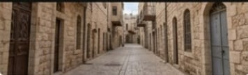
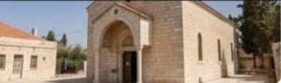
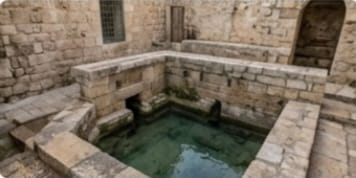
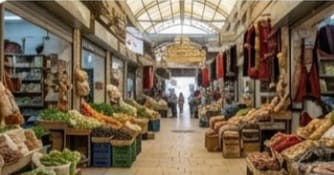
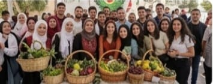

ذاكرة طوباس ومعالمها الجوهرية
"إرث طوباس من خلال شارع الحارة القديمة وكنيستها التاريخية، إلى جانب حيوية السوق الشعبي وأهمية عين الفارعة كمصدر مائي تاريخي للمنطقة."

شارع الحارة القديمة
أزقة متعرجة ومباني أثرية تروي تاريخ المدينة العريق وحياة سكانها.

كنيسة طوباس القديمة
صرح ديني وتاريخي هام يعود تاريخه إلى قرون مضت في قلب البلدة القديمة.

عين الفارعة
أحد المصادر المائية التاريخية الهامة التي غذت المنطقة منذ الأزل.

سوق طوباس الشعبي
مركز تجاري حيوي يعرض المنتجات الزراعية والحرفية المحلية.
مؤسسات طوباس وخدماتها الحيوية
"مشاهد تعكس التطور المؤسساتي في طوباس، تضم مستشفى طوباس التركي، جامعة القدس المفتوحة، ومبنى المحافظة، بالإضافة إلى حديقة عقابة العامة كمتنفس ترفيهي."

فرع جامعة القدس المفتوحة
مؤسسة تعليمية بارزة تساهم في تطوير الكفاءات العلمية لأبناء المحافظة.

مستشفى طوباس التركي الحكومي
يقدم خدمات طبية شاملة ورعاية صحية متقدمة لسكان المحافظة.

حديقة عقابة العامة
ملاذ عائلي ومساحات خضراء للتنزه والترفيه.

مبنى محافظة طوباس
المركز الإداري لإدارة شؤون المحافظة وتقديم الخدمات للمواطنين.
طوباس.. إرثٌ ديني واحتفاءٌ بالهوية
"توثيق لروح مدينة طوباس من خلال مسجدها القديم ومهرجانات التراث، إلى جانب الاحتفاء بمواسم الأرض في قطاف الزيتون وإنجازات الشباب في حفل تخرج جامعة طوباس التقنية."
مهرجان التراث والثقافة السنوي
احتفال سنوي يسلط الضوء على الفلكلور والتراث الغني للمدينة.

مسجد طوباس القديم
أحد أبرز المعالم الدينية والتاريخية في المدينة.
حفل تخرج جامعة طوباس التقنية
تخريج دفعات جديدة من الكفاءات الشابة المؤهلة.

احتفال موسم قطف الزيتون
حدث مجتمعي سنوي للاحتفاء بالزيتون وتقدير المزارعين.